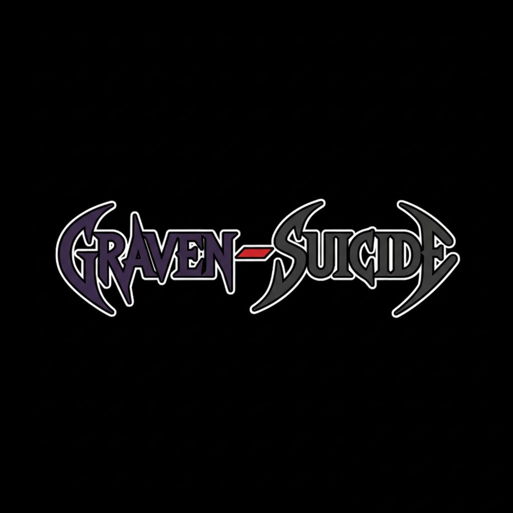

Graven-Suicide
| Genre | Metal |
| Web address | http://gravensuicide.tripod.com |
| Country | United States |
| Contact person | McDowell, Cory |
| Contact email | ed_man_88 at hotmail.com |
| Band birthday | 5/21/03 |
| More information | We play metal and thats about it. Graven-Suicide was formed because we four wanted to try something new with our insterments. Not only do we play metal, we have a blend of rock/punk/any other style of song we feel like playing. |
| Songs | No songs found in archive. |
NO songs

More bands in this genre